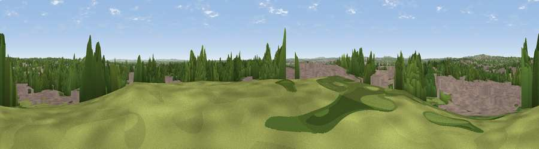

Viewpoint near Gravelly Hill
#41919 in England · top 79% of its area beats it · near Gravelly HillWhere it is
The exact computed spot (SP 10175 91825). Click the marker for map links.
The view, rendered

A 360° render of this exact spot computed from the terrain model, tree cover and land cover — summer colours, afternoon light, calibrated against photographs of famous viewpoints. Real trees, hedges and buildings will differ in detail.
The panorama
Grey silhouette: terrain skyline in each direction (720 bearings, Earth curvature and refraction included). Dashed green: skyline with trees (+15 m) and buildings (+8 m) as obstacles. Blue strip: how far the ground is visible on each bearing.
Where the view opens
Wedge length = distance to the farthest visible ground on that bearing (vegetation-aware). Rings at 10, 25 and 50 km.
What fills the view
53% built-up · 38% woodland · 8% grassland ·
Angular shares of the visible panorama (visual magnitude), not map area. Landscape diversity 0.42 (0–1 Shannon).
Key numbers
More beautiful places nearby
The staircase of upgrades: each row has a higher view potential than everything closer. Driving times are estimates from straight-line distance, calibrated against real road routing — check an actual route before setting out.
| Place | Direction | Drive | Score |
|---|---|---|---|
| Viewpoint near Sutton Coldfield | NNE · 4 km | ~9 min | 29.2 |
| Viewpoint near Great Barr | NW · 6 km | ~13 min | 34.7 |
| Viewpoint near Great Barr | NW · 7 km | ~14 min | 50.0 |
| Viewpoint near Streetly | NW · 7 km | ~15 min | 69.5 |
| Windmill Hill | SW · 19 km | ~32 min | 73.2 |
| Viewpoint near Clent | SW · 20 km | ~34 min | 73.8 |
| Viewpoint near Clent | SW · 21 km | ~35 min | 74.3 |
| Viewpoint near Stanton under Bardon | ENE · 42 km | ~61 min | 76.0 |
52.52421, -1.85146 · source: screening · position refined by local search. Computed location — check access rights before visiting.